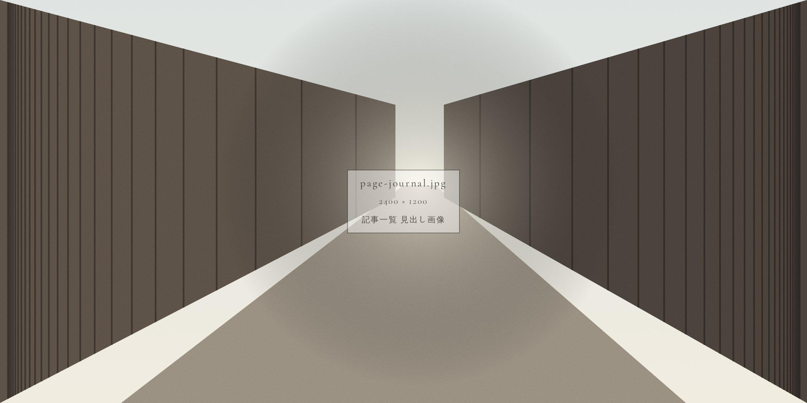
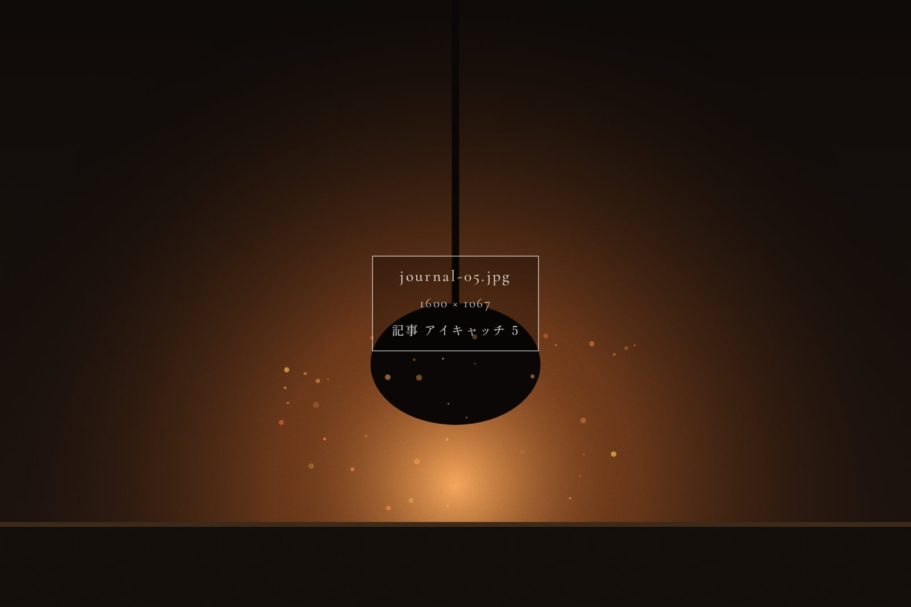
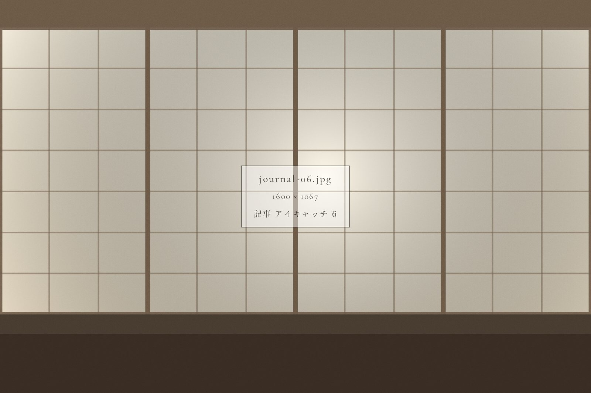
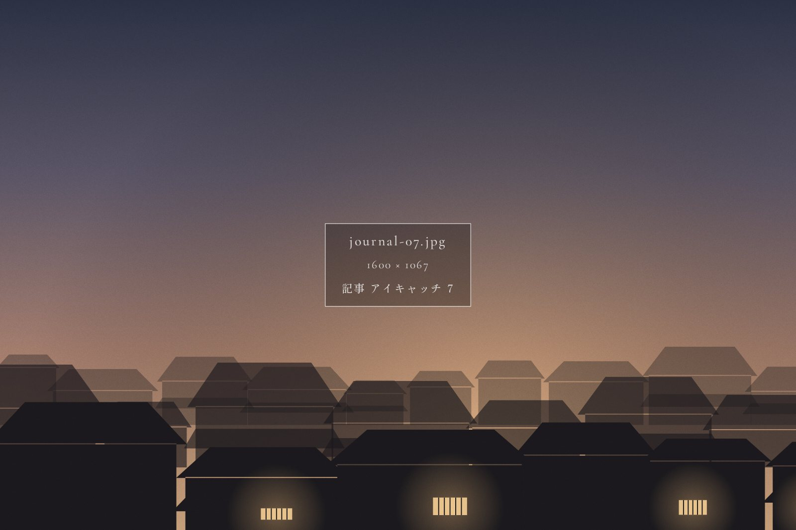

Pick up
朝七時の路地で出会った、町のいつもの風景
宿のまわりの町は、朝がいちばん静かです。観光のお客さんが歩きはじめる前の路地には、町の人たちのいつもの暮らしが流れています。スタッフが毎朝歩いている散歩道をご紹介します。
続きを読む
Journal
宿のまわりの町のこと、季節のこと。
スタッフが歩いて集めた小さな話をお届けします。
Pick up
宿のまわりの町は、朝がいちばん静かです。観光のお客さんが歩きはじめる前の路地には、町の人たちのいつもの暮らしが流れています。スタッフが毎朝歩いている散歩道をご紹介します。
続きを読む
町に残る酒蔵の多くは、同じ川の水を使っています。水の流れに沿って、蔵をめぐる半日の散歩へ。

宿の食卓で使っている器の作り手に会いに行きました。土と向き合う、静かな仕事場のお話です。

路地のあちこちから、お囃子の稽古の音が聞こえてくる季節。町が少しずつ祭りの顔になっていきます。

開店は朝の十時。地元の人に愛され続けてきた、小さな食堂の定食をいただきました。

雨の日の古民家には、晴れの日とは違う楽しみがあります。縁側で読みたい三冊をご紹介します。

誠に勝手ながら、冬季は建物の点検のため休業させていただきます。期間についてはこちらをご覧ください。